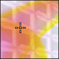
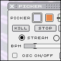

Picker. version beta 0.8
View screenshot with
explanations
View screenshot | View demo video
|
||||||
Description
Picker is an OSC (Open Sound Control) interface which has video and images as colour filters. The four pickers of the application pick up and send thouse colour values as OSC information to the application that hosts the sound engine. OSC is a new protocol which improves on the limitations of MIDI. At present, Supercollider, Max/MSP, Pure Data and Reaktor are good examples of sound software that support OSC.
There are two video channels, one for recorded video and another for streaming video. They can be blended and mixed together. There are also four image channels where bitmaps can be overlayed to create more complex visual texture. The RGB values and X and Y values are picked up by the four pickers which send those values out through OSC. Each picker has a bang value as well. Thus each picker has six channels of different numerical information which is received by the sound engine. The pickers can be moved around, they can move automatically or you can record their path.
Picker is therefore like an instrument that morphes constantly and changes shape. It is useful as a numerical generator where the numbers are generated with a highly intuitive and user friendly way. These numbers are then transformed into music. : )
In the compressed picker.sit file you'll find the Picker program,
a Supercollider patch, and a Max patch for demonstration purpose. There
are also two SC patches by
Fredrik Olofsson and Fabrice
Mogini. The idea of Picker is that you, the musician, will build your
own patch in Supercollider, Max, Pure Data, or Reaktor. We would love
to see your patches, and, if you allow, distribute them together with
the Picker application when ready. We are sorry to admit, but Picker is,
for now, a Mac-only program. We are waiting for further developments of
the OSC technology we are using on the PC platform.
Please email ixi for suggestions,
comments and critique. We'd love to hear from you.
Supercollider
and Pure Data are
free programs. Read about OSC here
and here.
If you intend to use Max/MSP, you have to download the OSC externals from CNMAT.